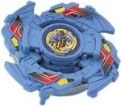

Griffolyon
| Griffolyon | |
|  | |
| Number: | A-28 |
|---|---|
| System: | 4-Layer/Hidden Spirit |
| Type: | Attack |
Contents
Attack Ring (AR): Cross Griffon
The Attack Ring of Griffolyon, Cross Griffon, takes the form of four sets of griffon heads and wings, and is somewhat thick compared to other commonly used Attack Rings.
While it was long overlooked, largely due to the ban on competitive use of Hidden Spirit Parts, recent testing has shown it to have Smash Attack to be on par with that of the famed Triple Wing (Trygle), and the legalisation of the Hidden Spirit Attack Rings for competitive play has resulted in Cross Griffon finally seeing tournament usage.
The main contact points, the four wing tips, are sharp and well spaced, producing an incredible amount of Smash Attack in right spin. The shape of these contact points helps focus the pressure from their attacks, dealing more damage to the opponent, and the overall size of the Attack Ring means it has excellent attack range. Lastly, while it lacks the slopes that a number of Smash Attack ARs are able to use to destabilise opponents and score outspins, it compensates for this with some of the most effective stopping power of any Attack Ring; Cross Griffon is able to deliver powerful hits that interrupt the rotation of opposing Beyblades, severely reducing their stamina, if not bringing them to a halt entirely.
While Cross Griffon has slightly more Recoil than Triple Wing, this is naturally controlled by most standard Smash Attack setups; Wide Defense alone is enough to control Recoil on rubber tipped bases, including the extremely fast, extremely light Grip Base, and either Wide Defense and an MG Core, or a Heavy Metal Core and 10 Wide are enough to negate any Recoil on SG Metal Flat 2.
A further advantage Cross Griffon has over Triple Wing is its thickness. Along with the greater availability and lower price of Griffolyon compared to Trygle, the thickness of Cross Griffon means that despite the incredibly forceful impacts it produces, it is very unlikely to break, even on extremely fast bases such as Grip Base, making it a more economical choice. That said, the sharp wing tips can cause damage to Stadium walls and more fragile opponents, and this may counteract savings from the lower price.
While the additional Recoil should be accounted for, Cross Griffon may be used in any standard Smash Attack customization with outstanding results.
Use in Smash Attack Customization
Arguably the best use of Cross Griffon's properties is:
- AR: Cross Griffon
- WD: Wide Defense
- SG: Neo Right SG (Magnecore)
- BB: SG Metal Flat Base (Gaia Dragoon V)
This combination is designed to capitalize on Cross Griffon?s most notable advantages. Wide Defense bolsters the already excellent stopping power of Cross Griffon, the externalised weight distribution making its movement and hits harder to interrupt, and also increasing speed and Survival. A Magnecore is used to reduce the Recoil to a point of irrelevancy, while having a small enough impact on Stamina to allow the combination to effectively outspin a wide range of opponents, even without its signature stamina-destroying ability.
As always, SG Metal Flat Base provides excellent speed and power for knock-outs, but its solid survival ability is what really makes this customisation so deadly. Cross Griffon?s powerful Smash Attack produces excellent stopping power; even if it fails to knock the opponent out of the stadium, the extremely heavy hits it delivers often disrupt opponents? spin, heavily reducing their survival ability, sometimes even stopping them outright. The Survival ability of SG Metal Flat Base capitalises on this, resulting in a combination that can defeat an opponent through both knock out and outspin.
A Heavy Metal Core may be used for extra controllability, but due to the negative impact it has on Survival ability, it is generally a better idea to practice launching until you can control the combination.
Mold Difference
Hasbro versions of this AR have attachment points for the figurine located on the top of the AR rather than the base. These only add Recoil, especially against taller opponents, and as such a Takara Cross Griffon is greatly preferred.
Weight Disk (WD): Eight Balance
See Eight Balance
Blade Base: Griffolyon Base
Ruling Clarification
Griffolyon Base is not legal for use in World Beyblade Organization-sanctioned tournaments. The following is included for informational purposes only.
Griffolyon Base has an integrated SG, similar to 4-Layer Beyblades. The main gimmick of this base is that the tip is not attached directly to the base, but instead is attached to a cylindrical body, which sits inside the shaft of the base, allowing a small amount of free-spin, albeit limited by the friction produced by plastic-on-plastic contact.
The tip itself is a tall, narrow, rounded tip, providing little movement, no Defense, and very poor balance, which also results in poor Survival.
These balance and Defense issues are compounded by the poles used to attach the included figurine (the main gimmick of the Hidden Spirit Beyblades), which extend downward from the base, and scrape easily when the base loses balance, or is hit hard enough to move away from the centre of the stadium, both of which are extremely common events. This is further worsened by the fact the bases of these poles protrude from the otherwise round perimeter of the base, creating massive amounts of Recoil, allowing even the most passive opponents to violently knock it out of the stadium.
These issues come together to give it some of the poorest stamina ability of the entire plastic generation: even Defense Grip Base (Seaborg), a base that has such poor stamina that it sees almost no use despite having almost peerless Defensive ability, is able to consistently outspin it. Its Defense is so bad that it is easily knocked out by even the most passive opponents, and as mentioned before, it lacks any Attack ability. Furthermore, unlike other similarly terrible bases, such as Trygle?s SG Jumping Base, it lacks an interesting gimmick. All of these factors mean it is able to make a very strong claim for the title of ?Worst Base in the Entire Plastics Generation.?
Obviously, even if it were legal, there would be absolutely no reason to use this base under any circumstance.
Mold Difference
Hasbro releases of Griffolyon Base have the poles removed (though the bases of them are still present). This provides slightly better Survival. However, it still uses the same tip, and the bases of where the poles are on the Takara version are still present, interrupting the circular shape of the base, and making an easy target for opposing Attack types. As such it still has poor Survival.
Furthermore, the shape of the base makes it an easy target for Upper Attack, although whether it is more or less vulnerable to low attackers than its Takara counterpart is questionable. While it is generally slightly better than its Takara counterpart, it is still just as useless competitively, and as such, best avoided, especially as it comes with a less useful mold of the Cross Griffon, the only useful part of this Beyblade.
Other Versions
- Griffolyon 2 (Hasbro) (Dark Purple, Hasbro Mold)
- A-128 - Bakutenryu Etanzel Dragon (Red)
- Griffolyon - Black Ver. (Takara)
Gallery
Griffolyon - Original Version
Beyblade Form
-

Base - Top View
-

Sticker Sheet
Hidden Spirit Beast Form
-
Side View
Hidden Spirit Beyblade Form
-
Upper View
-
Side View
-
2/3 View
-
Bottom View

Griffolyon - Black Version
Overall
With its powerful Smash-Focused Attack Ring and atrocious blade base, comparisons between Griffolyon and Trygle are inevitable. This, however, is not necessarily bad for Griffolyon, as it has a number of advantages over its more popular counterpart, most notably its increased aggression.
On the whole, Griffolyon should not be seen as a mere substitute for Trygle, but a very viable alternative. All serious competitive bladers should own one of the two, if not both.